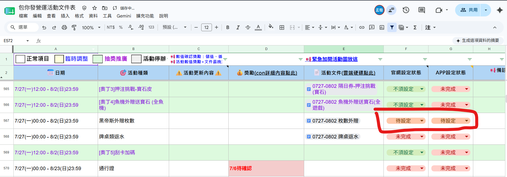
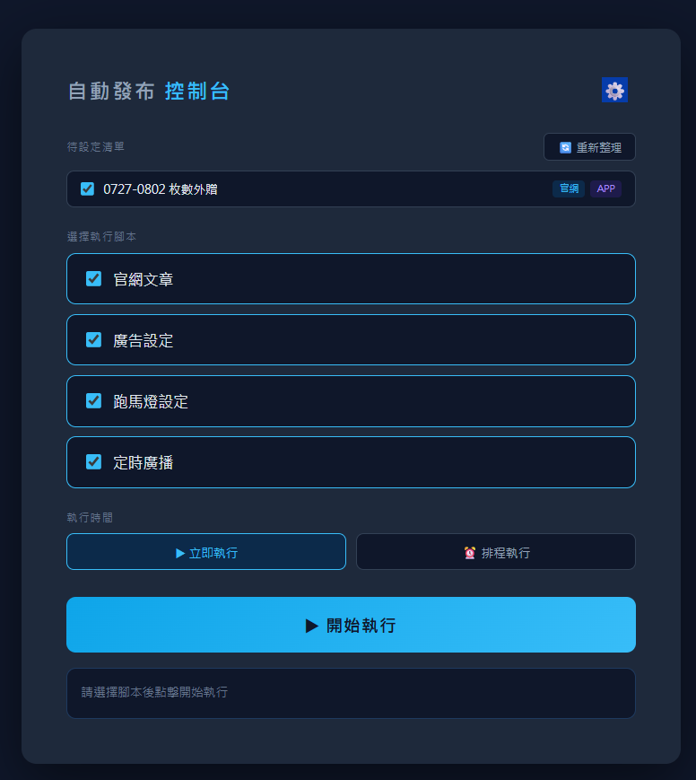

營運活動自動發布系統 — 使用指南
營運活動自動發布系統 — 使用指南
版本：v1.0 撰寫日期：2026-05-26
📝 修訂紀錄
⚠️ 維護提醒：每次修改內容時，請先更新
▲使用說明.md 確認後，再同步更新 使用說明.html，並在下方修訂紀錄補上版本資訊。
| 版本 | 日期 | 執行人 | 修訂內容 |
|---|---|---|---|
| v1.0 | 2026-05-26 | 呱呱 | 初版發布 |
🏃 快速入門
將已完成的文案，自動在後台進行設定，減少人為失誤且節省操作時間。
目前支援：
- 半自動 官網文章、廣告設定（官網燈箱）
- 全自動 定時廣播、跑馬燈設定
- 未自動化 APP 燈箱、APP 公告、APP 廣告彈窗、商城燈箱設定
⚠️ 注意：設定完成後請務必再進行二次 check，因文件設定後若有後續調整，可能導致設定失誤。
系統架構總覽
📋
資料來源
Google Docs（文案內容）
Google Sheets（待設定清單）
→
🖥️
控制台
start.bat 啟動
勾選項目 + 選腳本
立即 / 排程執行
→
⚙️
自動化腳本
官網文章 半自動
廣告設定 半自動
跑馬燈 全自動
定時廣播 全自動
→
🏁
結果回寫
後台 CMS 設定完成
試算表狀態自動更新
底層技術
🟩 Node.js
腳本執行引擎
腳本執行引擎
🎭 Playwright
瀏覽器自動化框架
瀏覽器自動化框架
🌐 Google Chrome
實際操作的瀏覽器
實際操作的瀏覽器
1. 環境需求
⚠️ 第一次使用新電腦，請依序完成以下步驟：
- Node.js — 前往 Node.js 官網 下載 LTS 版本安裝，安裝後重開電腦
- Google Chrome — 電腦通常已有，不需額外安裝
- 試算表使用權限 — 確認有營運排程試算表的編輯權限
2. 首次設定
- 點兩下
start.bat開啟控制台（第一次會自動安裝套件，請稍候） - 點右上角 ⚙️ 設定圖示
- 填入 Google 帳號 Email、後台帳號、後台密碼
- 點「儲存」後關閉設定面板
💡 後台帳號密碼儲存在
💡 Google 帳號的登入狀態儲存在
系統資料/config.json，設定後每次執行自動套用，不需要手動登入後台。💡 Google 帳號的登入狀態儲存在
系統資料/google_auth/。這是瀏覽器的 session，偶爾會過期，過期時系統會彈出瀏覽器請你重新登入 Google。遇到這種情況請執行 node src/google-login.js 重新登入即可。
3. 日常使用方式
▲ 實際執行示範影片
💡 系統只會發佈試算表上標示為「待設定」的項目，其他狀態的項目一律跳過不處理。
- 點兩下
start.bat，開啟控制台


- 勾選要本次處理的項目（預設全選）
- 選擇要執行的腳本（見下方說明）
- 點「▶ 開始執行」（或設定排程時間後再執行，見 3.2）
- 下方 log 區域顯示執行進度，完成後試算表狀態自動更新
⚠️ 開始執行後通常會要求 Google 帳號登入。若速度太慢導致腳本失敗，需重新執行一次。
3.1 腳本選擇說明
| 腳本 | 類型 | 說明 |
|---|---|---|
| 官網-文章 | 半自動 | 自動填入文章文字內容到後台。 ⚠️ 並非每篇文章都有自動化（Docs 文件上沒有標記 AI 自動化的不會執行） ⚠️ 執行後需手動補上：圖片、獎勵表格 📌 內文欄位讀取的是 HTML 原始碼，需到後台文章編輯器點「原始碼」按鈕複製貼入 Docs。 📌 文章內容有修改時，需重新到後台複製最新的 HTML 原始碼，更新 Docs 後再將試算表狀態改回 待設定 重新執行。 |
| 官網-廣告設定 | 半自動 | 自動填入廣告資料到後台。 ⚠️ 執行後請人工確認內容是否正確 |
| App-跑馬燈設定 | 全自動 | 從 Docs 讀取資料，自動完成 APP 跑馬燈設定 |
| App-定時廣播 | 全自動 | 從 Docs 讀取資料，自動完成 APP 定時廣播設定 |
⚠️ 半自動項目因需人為確認，執行時請務必人在，否則程式有機率卡在同一篇文章。
3.2 執行時間選擇
- ▶ 立即執行 — 點下去馬上開始
- ⏰ 排程執行 — 設定指定時間，系統自動在時間到時執行
4. 中途停止
執行中可點「⏹ 停止執行」：
- 系統立即停止所有腳本
- 已成功完成的文件 → 試算表顯示「已完成」
- 尚未執行到或中途被停止的文件 → 試算表顯示「設定失敗」
5. 試算表狀態說明
試算表連結：https://reurl.cc/8eAGa4
🤖 AI 腳本自動化用
| 狀態 | 說明 | 由誰寫入 |
|---|---|---|
| 待設定 | 尚未處理，等待執行 | 人工填入後，腳本才會處理 |
| 已完成 | 所有腳本執行成功 | 腳本自動寫入 |
| 設定失敗 | 有腳本失敗，或執行中途被停止 | 腳本自動寫入 |
✋ 人工管理（與自動化無關）
| 狀態 | 說明 |
|---|---|
| 未完成 | 項目本身尚未完成 |
| 已暫停 | 活動暫停 |
| 不須設定 | 該項目不需要設定文章 |
💡 腳本只處理狀態為
待設定 的列，其餘狀態一律跳過不動。6. 常見問題
Q：廣告設定執行時出現「您的網際網路存取權遭到封鎖」？
正常現象，不需要手動操作。這是 Windows 防火牆在前一個腳本（官網文章）剛關閉 Chrome 後，暫時封鎖新開的 Chrome 視窗。腳本偵測到這個錯誤頁面後會自動等 5 秒重試，最多重試 3 次，之後就會恢復正常繼續執行。
Q：控制台開啟後掃描一直轉圈？
Google 帳號可能需要重新驗證。開啟終端機，執行：
cd src
node google-login.js在彈出的瀏覽器完成 Google 登入後，再重新開啟控制台。
Q：試算表狀態沒有更新？
確認 ⚙️ 設定中的 Google Email 是否填寫正確。
Q：出現「腳本不存在」紅字？
對應的 .js 檔案不在 src 資料夾中，請確認檔案是否遺失。
Q：其他文件該如何也自動化？
請依照已有自動化的文件格式填寫 Google Docs。以官網文章為例：
- 建立一份新的 Google Docs（或複製現有的自動化文件）
- 確認文件內有區段標題：
官網設定-文章管理-AI自動化用 - 區段內填入以下欄位：
類別：最新消息>活動
標題：你的文章標題
內文：
<p>文章 HTML 原始碼...</p>
上架時間：2026/5/26 10:00:00💡 文章 HTML 原始碼：進後台文章編輯器 → 點「原始碼」按鈕 → 全選複製貼上即可保留格式。
- 在試算表 E 欄插入該文件的超連結（須用「插入連結」，不能只貼網址文字）
- F 欄改為
待設定，下次執行控制台時即會自動處理
7. 腳本修改說明 （開發者參考）※ 若不好手動更新，建議透過 AI 處理
💡 所有腳本都在
src/ 資料夾，帳號密碼設定在 系統資料/config.json。7.1 後台網址或帳密
直接編輯 系統資料/config.json：
{
"backstage": {
"url": "https://your-backstage.com", // 後台網址（不要加 /login）
"username": "帳號",
"password": "密碼"
},
"google": {
"email": "your@gmail.com"
}
}7.2 換一份試算表
需修改 run-from-sheet.js 和 scan-sheet.js 最開頭的兩個變數：
const SHEET_ID = '這裡填試算表 ID';
const SHEET_GID = '這裡填分頁 ID';- 試算表 ID → Google Sheets 網址中
/d/後面那串 - 分頁 ID → 網址
#gid=後面的數字
7.3 Google Docs 的欄位名稱
腳本透過「欄位名稱：值」的格式讀取 Docs 內容。如果 Docs 裡的欄位標題改名了，需同步修改腳本中 get('欄位名稱') 的字串：
const extracted = {
content: get('跑馬燈內容'), // ← 這裡 = Docs 裡冒號左邊的標題
count: get('出現次數'),
interval: get('出現間隔'),
};必填驗證也要跟著改（get() 那段下方幾行）：
if (!extracted.content) missingFields.push('跑馬燈內容');7.4 Google Docs 的區段標題
每個腳本頂端有 ALL_SECTIONS 陣列，以及後段的 extractSection() 呼叫，兩個地方都要改成一樣的名稱：
const ALL_SECTIONS = [
'官網設定-文章管理-QA測試用',
'官網設定-廣告設定',
'APP-公告系統-跑馬燈設定', // ← 要跟 Docs 裡的標題完全一樣
'APP-客服系統-定時廣播',
];
// 後段：
const sectionText = extractSection(allText, 'APP-公告系統-跑馬燈設定');
// ↑ 這裡也要一起改7.5 後台表單操作（Playwright selector）
如果後台網頁改版，按鈕或欄位文字變了，需更新腳本中對應的操作：
await page.getByRole('textbox', { name: '跑馬燈內容' }).fill(value);
// ↑ 對應後台頁面上輸入框旁的標籤文字
await page.getByRole('button', { name: '確定新增' }).click();
// ↑ 對應後台頁面上按鈕的文字找不到元素時，可雙擊 點我錄製腳本.bat 重新錄製，將產生的程式碼交給 AI 協助更新腳本。
7.6 新增一個全新的自動化腳本
- 雙擊
點我錄製腳本.bat，在開啟的後台瀏覽器中錄製你想自動化的操作流程 - 把錄製產生的程式碼複製起來，丟給 AI，說明：「我要新增一個自動化腳本，請依照現有腳本的格式幫我整合進去」
- AI 會處理所有技術細節（腳本建立、控制台整合、試算表狀態更新）
💡 建議把這份
使用說明.html 和 參考文件/ 資料夾一起提供給 AI，讓它了解系統架構再動手。